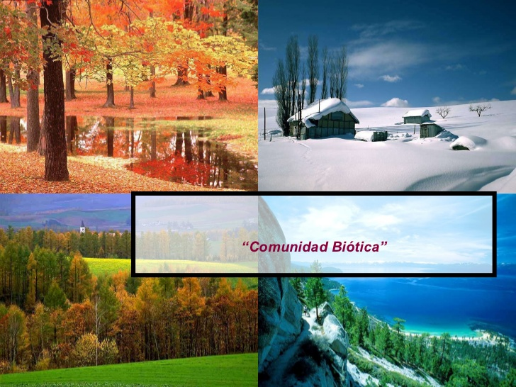
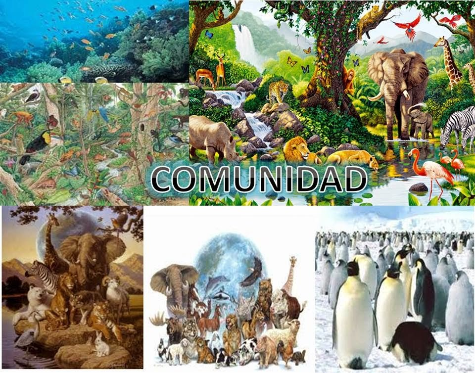

Tema 2
Ecologia

En este apartado voy a explicarle al usuario el tema "Comunidad biotica" que fue lo que vimos esta semana en clase
Para empezar ¿Qué es la comunidad biotica? Bueno pues se llama comunidad biótica al conjunto de poblaciones que viven en un hábitat o zona definida que puede ser amplia o reducida. Las interacciones de los diversos tipos de organismos conservan la estructura y función de la comunidad y brindan la base para la regularización ecológica de la sucesión en la misma.
Caracteristicas
Una comunidad biótica no contiene, por lo general, el mismo número de plantas y animales. Frecuentemente una o más especies tendrá una particularmente fuerte influencia sobre la naturaleza de la comunidad entera. Dichas especies se les refiere como las dominantes. Las especies dominantes de la comunidad son usualmente los productores - o los consumidores - principales de energía en cada nivel. Así, sobre un estrecho pastizal, ciertos tipos de pastos podrían ser las plantas dominantes, los insectos come-plantas, los herbívoros dominantes, y los pájaros come-insectos, los predadores dominantes. Los ecosistemas simples frecuentemente tienen solamente una especie dominante en cada nivel. Así pues, suele resultar más difícil, para una sola especie ser la dominante en ecosistemas complejos. Aunque una comunidad puede englobar cientos de miles de especies vegetales y animales, muchas son relativamente poco importantes, de modo que únicamente algunas, por su tamaño y actividades, son decisivas en la vida del conjunto.
En las comunidades terrestres las especies dominantes suelen ser vegetales por dar alimento y ofrecer refugio a muchas otras especies; de esto resulta que algunas comunidades se denominan por sus vegetales dominantes, como artemisa, roble, pino y otras.
Comunidades acuáticas que no contienen grandes plantas conspicuas se distinguen generalmente por alguna característica física: comunidad de corrientes rápidas, comunidad de lodo plano y comunidad de playa arenosa.

Factores bióticos y abióticos
El planeta Tierra es el único planeta conocido que tiene las condiciones adecuadas para que los organismos vivos crezcan, se reproduzcan y sobrevivan. Los factores bióticos y abióticos son los factores del ecosistema y tienen un papel importante en la formación del ecosistema. Los factores abióticos pueden definirse cuáles son los componentes físicos y químicos no vivos en el ecosistema. Mientras que los factores bióticos son los componentes vivos de un ecosistema. Tanto los factores bióticos como los abióticos influyen en la supervivencia y la reproducción. Ambos componentes están relacionados entre sí, si un componente o un factor es eliminado o cambiado, afectará a todo el ecosistema. Entre ambos factores, el Abiotico juega un papel vital ya que afecta directamente la supervivencia de los organismos. Factores Abióticos Dentro de la complejidad de los ecosistemas, los factores abióticos se denominan componentes no vivos (químicos y físicos). Afecta la capacidad del organismo para reproducirse y sobrevivir

Origen de la comunidad biotica
Todos los seres vivos hacen el sistema biótico de la tierra. Ni los organismos ni las poblaciones de especies existen por sí mismos en la naturaleza, pero siempre son parte de un conjunto de diferentes poblaciones de especies que viven juntas en la misma área. Cualquier conjunto de poblaciones de organismos vivos en el área o hábitat prescritos se denomina comunidad biótica.
En conclusion Una comunidad biótica, también conocida como biota o ’biocoenosis’, es el grupo de organismos que viven juntos e interactúan entre sí dentro de un entorno o hábitat. En conjunto, la comunidad biótica y el paisaje físico o factores abióticos conforman un ecosistema.
